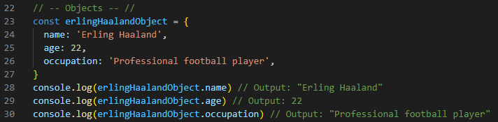

JavaScript Fundamentals
What is JavaScript and its relationship to HTML and CSS?
HTML, short for Hypertext Markup Language, is an essential building block of any webpage. In another words, it is defined as a standard markup language used to create web pages and applications. HTML provides a structure for the content of the website and is made up of markup tags and attributes to create headings, paragraphs, lists, links, images, and other elements.
CSS, short for Cascading Style Sheets, is a style sheet language for describing the presentation of webpages. It is used to select HTML elements to apply styles to them; by adding colours, layout, and position and by using different kinds of fonts. CSS can also be used to create navigation bars on webpages, add animation, and add responsiveness to websites.
JavaScript, commonly abbreviated to JS, is a programming or a scripting language that enables you to create dynamically updating content, user interface animations, form validation, and many more. JavaScript is a powerful language that is widely used in web development.
So basically, we use these three languages to format, design, and program web pages. Please see the below image so that it gives us a better understanding of what these languages are. Using cars for example, we need the parts (like steels, doors, windows, mirrors, etc) and structure them out to build a car – This is the "HTML." Once we have the car ready (but just plain grey coloured steel), we can design our car by painting it to match our favourite colour, adding fancy mag wheel, adding a rear spoiler, and many more – This is the "CSS." Now that we have our car all ready and designed perfectly, by adding the most crucial parts of a car (like the engine, transmission, battery, etc), we can drive anywhere we like – This is the "JavaScript."

What is a Control Flow and Loops?
Control Flow is the order in which the computer executes statements in a script. Code is run from the first line and ends at the last line in order, unless it hits any statement that changes the control flow of the program such as loops, conditionals, or functions. Loops are a type of control flow statements that allow a program to repeat a set of statements multiple times until either nothing is left to loop over, or if the condition becomes false. There are different types of loops in programming, such as: for loop, while loop, and do-while loop.
Here is an example. When we think about our daily life, there are certain routines that we take. A normal person will wake up in the morning, have breakfast, work, have lunch, work again, have dinner, go to gym, and sleep. To show this, we can use the 'for loop' type - The syntax for a 'for loop' contains a variable declaration of 'i' which is the index of the array "dailyLife" that we are currently iterating over. After that we have the condition that checks if 'i' is less than the length of our array, followed by an increase in 'i'. Basically what we are trying to say is when we go through our routine, we wake up (condition is true). Then we have a look at the second part of the rountine, which is to have a breakfast (true again). Then we go work (still true), and so on until we reach the final part of the routine which is to sleep.
What is a DOM?
DOM, short for Document Object Model, is an essential part of web development. It provides a way for programmers to interact with and manipulate the structure of a website. In another words, it is like a map of a website – DOM shows you where everything is on a website.
Below picture of a DOM Tree will help you understand better. Each part of the website is called an “element” and are arranged in a tree-like structure. The root of an element is HTML and from there the tree branches out into different sections.

An example of how we might interact with the DOM is to manipulate the text content of an HTML element on a web page. Common DOM methods are: getElementId(), getElementsByTagName(), getElementsByClassName(), querySelectorAll, and querySelector.
Here is an example. We can see that in line 14, I have added a 'p' (paragraph) tag with an id "AboutHaaland". The paragraph shows "Erling Haaland has scored 44 goals all season."

Here, we first get a reference to the paragraph element using the 'getElementById()' method of the 'document' object, which is the root node of the DOM tree. Using the same id as the 'p' tag above, we can manipulate its properties using JavaScript, under the tag 'script'. Also, we are changing the text content of the element, so I have set the 'textContent' property to a new value - We can see that in lines 18 and 21. When this script runs, it will change the text content of the paragraph element on the page to "Erling Haaland has now scored 45 goals all season."
What is the difference between accessing data from arrays and objects?
In JavaScript, arrays and objects are both types of data structures, but they work differently and are used for different purposes. Arrays are used to store ordered collections of data, where each element in the array is identified by its index number. Whereas objects are used to store collections of data that are identified by keys or properties.
Here is an example of Arrays. We will use an example of some cool things about Erling Haaland (football player). We can see that for Arrays part (lines 8 to 12), we are looking at how many goals Haaland has scored in the 22/23, 21/22, and 20/21 season respectively. Note that the index numbers of an array always start at 0. So to see how many goals Haaland has scored in the 22/23 season, we can use the index number 0 (line 10) and find out how many goals he has scored (45 goals).
Here is an example of Objects. To access data from an object, we can use the key of the property. Like for example, if we were to find out his age, we can use the '.age' key (line 22) and the age is 22.
What are functions? Why they are helpful?
Functions are one of the fundamental building blocks in JavaScript. A JavaScript function is defined with the function keyword, followed by a name that contains letters, digits, underscores, and dollar signs. It is then followed by parentheses () that includes parameter name or names separated by commas. In order to execute the code, we need to place the code inside the curly brackets {}, by the function. Functions help us to organise and structure our code. It also allows us to reuse the code and make it easier to understand and maintain large codebases.
Here is an example of how it is written in coding. We can see that there is a function keyword followed by the name 'sum', followed by two parameters inside the parentheses, separated by commas 'num1, num2'. I have placed the code ‘return num1 + num2’ inside the curly brackets which gives the meaning of when I enter in any two numbers (for example, one number in num1 and another number in num2), it will give me a return of the two numbers added up. Then I can use this information in a variable ‘let result = sum(1, 2)’ and the result will be 3.